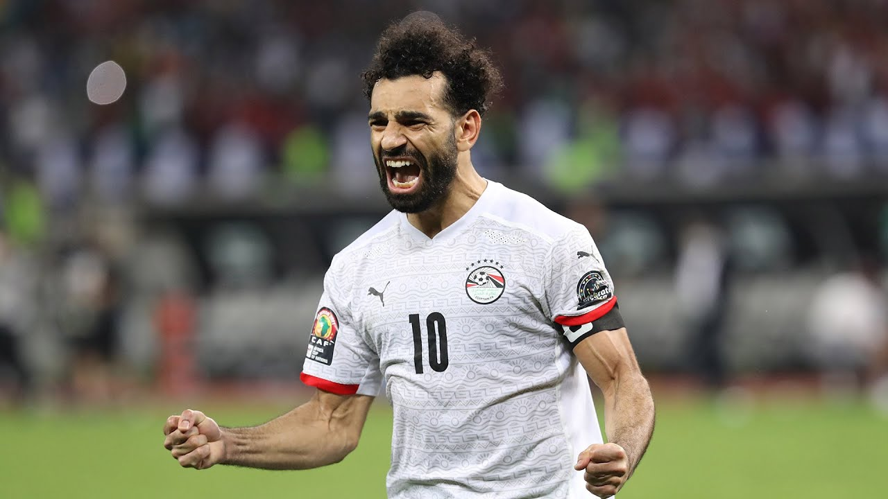

|  |
| MOHAMED SALAH WITH THE COUNTRY
picture by google |
Di level internasional, Mo Salah melakoni debut bersama timnas Mesir senior pada pertandingan menghadapi Sierra Leone, 3 September 2011. Salah menjadi pahlawan kemenangan Mesir atas Kongo pada Kualifikasi Piala Dunia 2018. Mesir pun kembali tampil di Piala Dunia setelah terakhir pada 1990. Hingga saat ini, Mohamed Salah telah mencatatkan 45 gol dari 70 pertandingan internasional bersama Mesir.
Striker Liverpool asal Mesir, Mohamed Salah memecahkan rekor baru timnas Mesir.
Mohamed Salah mencetak 4 gol saat Mesir menang 6-0 atas Djibouti di kualifikasi Piala Dunia 2026.
Penyerang Liverpool itu membuka skor pada menit ke-17 dengan penyelesaian first-time menggunakan kaki kanannya yang lebih lemah.
Mohamed Salah kemudian mengkonversi tendangan penalti untuk menggandakan keunggulan timnya lima menit kemudian.
Dia menyelesaikan hat-tricknya di awal babak kedua dengan penyelesaian kaki kanan lainnya.
Mohamed Salah kini menjadi pencetak gol terbanyak Mesir sepanjang masa di kualifikasi Piala Dunia.
Mohamed Salah telah mencetak gol sebanyak 15 gol di kualifikasi Piala Dunia.
Total, Salah kini telah mencetak 55 gol internasional untuk Mesir dalam 94 penampilan bersama timnas Mesir.
Striker yang telah pensiun, Hossam Hassan adalah satu-satunya pemain yang mengungguli Salah dalam daftar pencetak gol terbanyak Mesir sepanjang masa.
Hassan mencetak 68 gol untuk negaranya dalam 176 pertandingan antara tahun 1985 dan 2006.